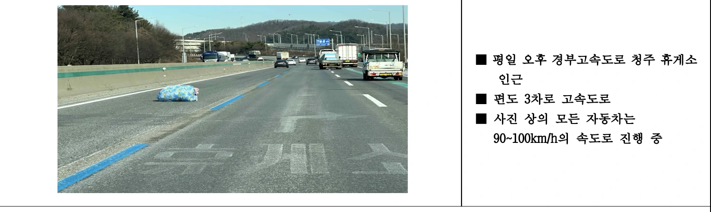

742. Hai câu nào không đúng khi kết nối thông tin có thể biết được và cách lái xe an toàn tương ứng thông qua các tình huống sau?

- ①Vật rơi trên đường - Bật đèn nháy khẩn cấp để thông báo cho các xe đi sau biết tình huống nguy hiểm.
- ②Làn đường số 1 - Vào ngày thường, người lái xe ô tô con được phép vượt.
- ③Vạch màu chỉ dẫn trên mặt làn đường số 3 - Vào ngày thường, đây là làn đường dành riêng cho xe buýt.
- ④Biển báo trạm dừng chân - Đây là biển báo cho biết phía trước bên phải sắp có trạm dừng chân.
- ⑤Đường có 3 làn đường một chiều - Người lái xe chở hàng có thể đi ở làn đường số 1 để vượt.
Xem đáp án
Đáp án
③ Vạch màu chỉ dẫn trên mặt làn đường số 3 - Vào ngày thường, đây là làn đường dành riêng cho xe buýt.
⑤ Đường có 3 làn đường một chiều - Người lái xe chở hàng có thể đi ở làn đường số 1 để vượt.
Căn cứ
Vạch xanh đặt trong làn số 3 không phải là làn đường mà là vạch chỉ dẫn màu trên đường. Vạch chỉ dẫn màu đường là vạch vẽ dọc giữa làn đường để định hướng hướng chạy của ô tô. Xe chở hàng phải đi trên làn bên phải (làn số 3 trong ảnh) trên đường cao tốc có từ ba làn mỗi chiều trở lên và có thể vượt ở làn liền kề bên trái khi vượt (Quy tắc thi hành Luật Giao thông đường bộ [Phụ lục 9]).
Phần căn cứ là bản dịch máy để tham khảo.